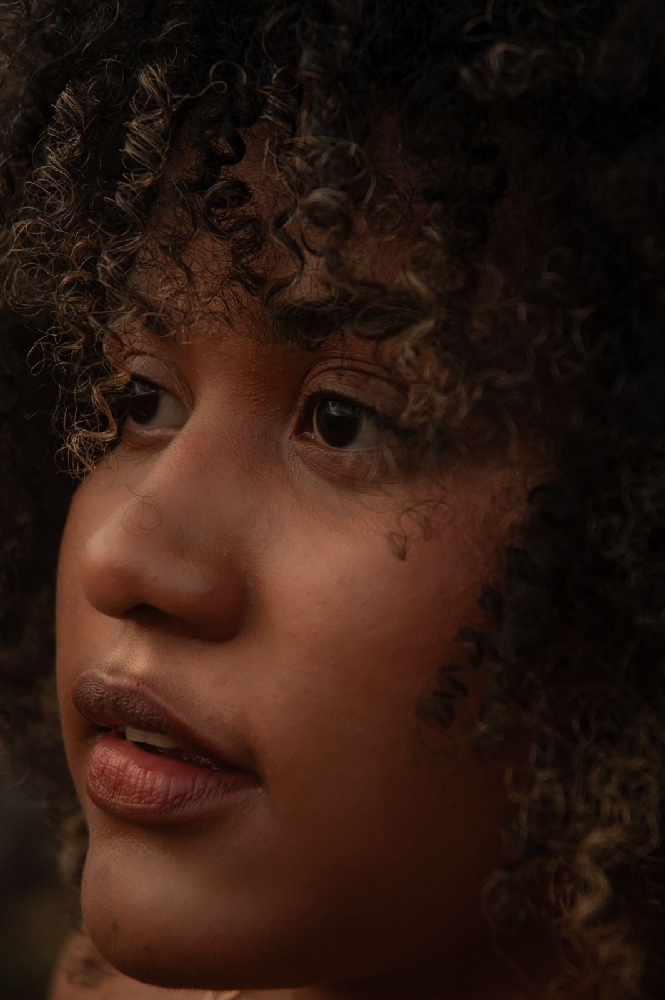

Quale tagliosta bene altuo viso?
- Viso tondo: lunghezze sotto il mento e volume in alto, niente frangia piena.
- Viso lungo: frangia morbida e onde ai lati per bilanciare le proporzioni.
- Viso quadrato: scalature leggere attorno alla mascella e riga laterale.
Prenota una consulenza